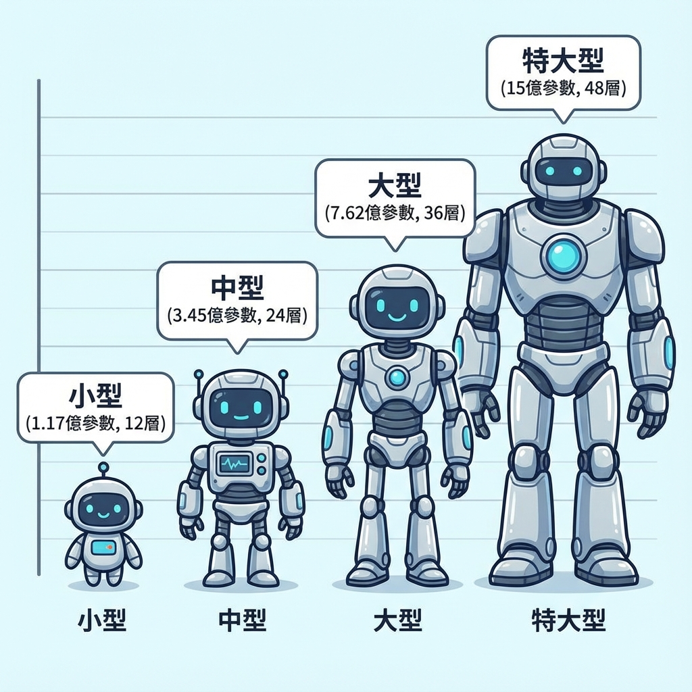

2.3. Model（模型架構）
GPT-2 並沒有發明全新的架構，而是大規模擴展了 GPT-1 的架構。
但這個「擴展」並非隨意，而是精心設計的實驗：
訓練四個不同規模的模型，觀察規模如何影響 Zero-Shot 效能。
✦
📄 論文原文
"We use a Transformer (Vaswani et al., 2017) based architecture for our LMs. The model largely follows the details of the OpenAI GPT model (Radford et al., 2018) with a few modifications."
翻譯：我們為語言模型使用基於 Transformer (Vaswani et al., 2017) 的架構。模型在很大程度上遵循 OpenAI GPT 模型 (Radford et al., 2018) 的細節，但有一些修改。
🔧 GPT-2 的架構改進
📄 論文原文（關鍵修改）
"Layer normalization (Ba et al., 2016) was moved to the input of each sub-block, similar to a pre-activation residual network (He et al., 2016), and an additional layer normalization was added after the final self-attention block. A modified initialization which accounts for the accumulation on the residual path with model depth is used. We scale the weights of residual layers at initialization by a factor of 1/√N where N is the number of residual layers. The vocabulary is expanded to 50,257. We also increase the context size from 512 to 1024 tokens and a larger batchsize of 512 is used."
翻譯：Layer normalization 被移到每個子區塊的輸入處，類似於預激活殘差網絡，並在最終的 self-attention 區塊後添加了額外的 layer normalization。使用修改後的初始化方法，該方法考慮了模型深度上殘差路徑的累積。我們在初始化時將殘差層的權重縮放 1/√N，其中 N 是殘差層的數量。詞彙表擴展到 50,257。我們還將 context size 從 512 增加到 1024 tokens，並使用更大的 batch size 512。
💡 關鍵改進點
- ✅ Pre-activation Layer Norm：移到輸入處，訓練更穩定
- ✅ 修改的初始化：考慮殘差路徑累積，防止梯度爆炸
- ✅ 擴大 Context Window：從 512 → 1024 tokens（2倍）
- ✅ 更大的 Batch Size：512（更穩定的訓練）
- ✅ 更大的詞彙表：50,257 tokens（Byte-Level BPE）
📊 Table 2: 四個模型規模的超參數

GPT-2 的四種尺寸：從 117M 到 1.5B 參數，模型規模逐步擴大
📄 論文原文
"We train a series of language models on WebText that vary in size from 117 million to 1.5 billion parameters as summarized in Table 2. The smallest model is equivalent to the original GPT, and the second smallest equivalent to the largest model from BERT (Devlin et al., 2018). The largest model, which we call GPT-2, has over an order of magnitude more parameters than GPT."
翻譯：我們在 WebText 上訓練了一系列語言模型，參數規模從 1.17 億到 15 億不等，如表 2 所示。最小的模型等同於原始 GPT，第二小的模型等同於 BERT 的最大模型。我們稱為 GPT-2 的最大模型，其參數量比 GPT 多一個數量級以上。
| 模型名稱 |
參數量 (Parameters) |
層數 (Layers) |
模型維度 (d_model) |
特殊說明 |
| GPT-2 Small |
117M |
12 |
768 |
等同於原始 GPT |
| GPT-2 Medium |
345M |
24 |
1024 |
等同於 BERT-Large |
| GPT-2 Large |
762M |
36 |
1280 |
— |
| GPT-2 XL |
1.5B (1542M) |
48 |
1600 |
最大模型，本論文主角 |
📐 模型規模的計算
參數量主要由以下因素決定：
- Layers（層數）：更多層 = 更深的網路 = 更強的表達能力
- d_model（模型維度）：更高維度 = 更豐富的表示
- 詞彙表大小：50,257 tokens（所有模型相同）
- Context Window：1024 tokens（所有模型相同）
粗略估算：參數量 ≈ 12 × Layers × d_model²
🔬 實驗設計：為什麼訓練四個模型？
這不是浪費資源，而是精心設計的實驗。
OpenAI 想要回答一個關鍵問題：
「規模化（Scaling）是否能持續提升 Zero-Shot 效能？」
答案在第 4 章的實驗結果中揭曉：是的，而且是 log-linear 關係！
這個發現直接促成了 GPT-3 的誕生。
⚙️ 訓練細節
🔢 關鍵數據
- 訓練資料：WebText（40 GB，800萬文件）
- Context Window：1024 tokens
- Batch Size：512
- 詞彙表大小：50,257（Byte-Level BPE）
- 優化器：Adam
- 訓練時間：論文未明確說明（推測數週到數月）
🎯 為什麼 Context Window 很重要？
🌰 Context Window = 短期記憶
GPT-2 的 1024 tokens 大約是 700-800 個英文單詞。
這意味著：
- ✅ 能處理中等長度的文章或對話
- ✅ 足以完成大多數 Zero-Shot 任務
- ❌ 無法處理超長文件（如整本書）
- ❌ 會「忘記」超出 1024 tokens 的內容
這也是為什麼 ChatGPT 會「忘記」對話開頭的內容——
Context Window 的限制一直延續到 GPT-3、GPT-4。
🔗 與 GPT-1 和 BERT 的比較
GPT-1 (2018)
117M 參數
12 層
768 維
512 Context Window
需要 Fine-tuning
GPT-2 (2019)
1.5B 參數
48 層
1600 維
1024 Context Window
Zero-Shot Learning
BERT-Large (2018)
345M 參數
24 層
1024 維
512 Context Window
雙向 Encoder
💡 關鍵差異
- GPT-2 vs GPT-1：規模擴大 13 倍，Context Window 擴大 2 倍
- GPT-2 vs BERT：參數量更大，但 BERT 是雙向（更適合理解任務）
- Zero-Shot 能力：GPT-2 的核心突破，BERT 和 GPT-1 都需要 Fine-tuning
🔮 為 GPT-3 鋪路的架構選擇
GPT-2 的架構設計並非終點，而是通往 GPT-3 的橋樑。
透過訓練四個不同規模的模型，OpenAI 驗證了一個假設：
「如果 1.5B 參數能帶來如此大的提升，
那 100B+ 參數會如何？」
這個問題的答案，在 2020 年 GPT-3 的 175B 參數中得到驗證。
「規模化不僅是一個工程問題，
更是通往通用 AI 的一條道路。」
📝 本章重點回顧
- 基於 Transformer：沿用 GPT-1 架構，但有關鍵改進
- Pre-activation Layer Norm：移到輸入處，訓練更穩定
- 擴大 Context Window：從 512 → 1024 tokens
- 四個模型規模：117M、345M、762M、1.5B 參數
- 實驗設計：驗證規模化效應的 log-linear 關係
- 為 GPT-3 鋪路：證明更大規模 → 更強能力
🎓 理解模型規模的意義
GPT-2 的 1.5B 參數在 2019 年是非常大的模型。
相比之下：
- BERT-Large：345M 參數
- GPT-1：117M 參數
- GPT-3（2020）：175B 參數（117 倍於 GPT-2）
- GPT-4（2023）：參數量未公開（推測 >1T）
規模化的競賽，從 GPT-2 開始加速。